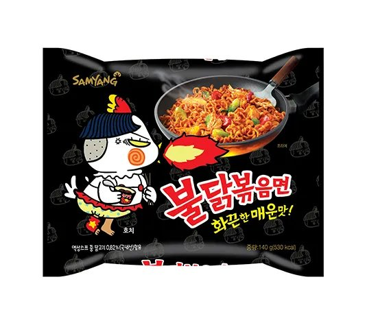

불닭볶음면 — 편의점 인기 매운라면
삼양 불닭볶음면은 한국을 대표하는 매운맛 라면으로, 편의점·마트에서 컵·봉지 모두 쉽게 살 수 있습니다. 기념품·도전용으로도 유명해요.
팁
처음엔 ‘오리지널’보다 덜 매운 라인을 고르거나, 치즈·우유를 곁들이면 부담이 줄어듭니다.

삼양 불닭볶음면은 한국을 대표하는 매운맛 라면으로, 편의점·마트에서 컵·봉지 모두 쉽게 살 수 있습니다. 기념품·도전용으로도 유명해요.
처음엔 ‘오리지널’보다 덜 매운 라인을 고르거나, 치즈·우유를 곁들이면 부담이 줄어듭니다.